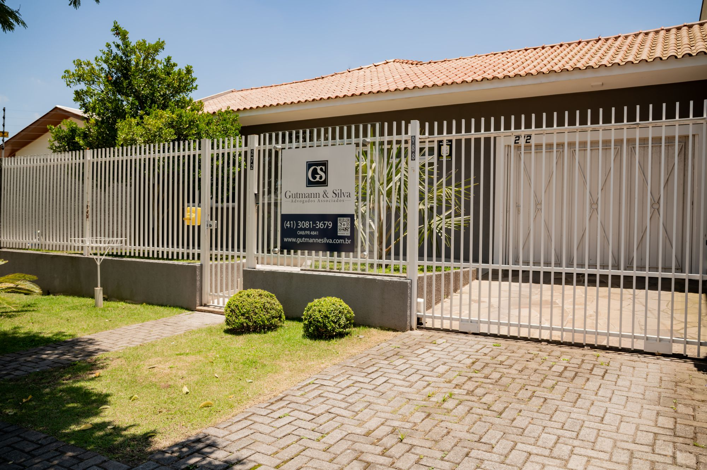
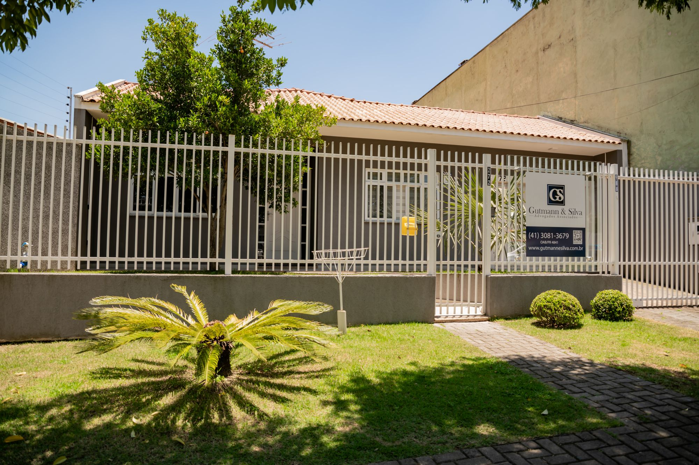
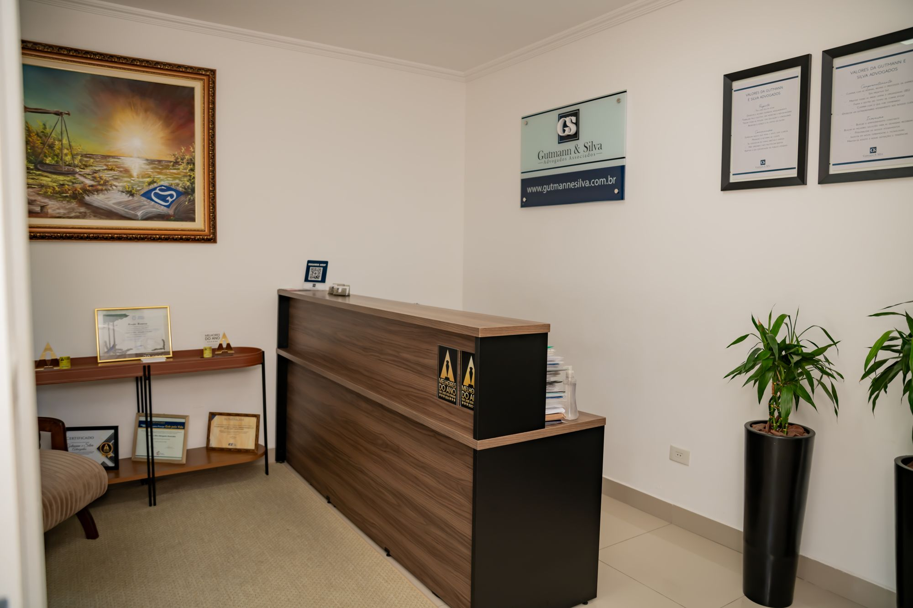
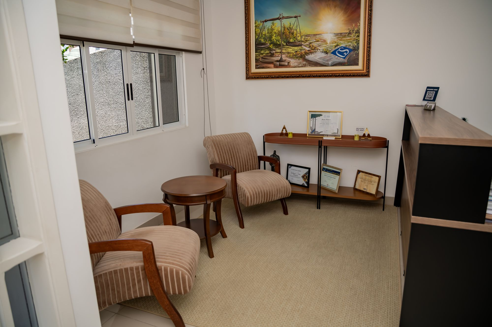
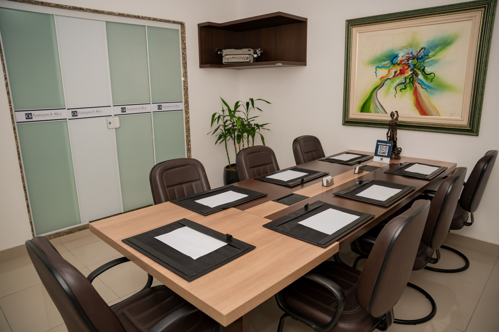

Eleito Melhor Escritório de Advocacia do Ano em São José dos Pinhais em 2022, 2024 e 2025
Reconhecimento da comunidade local pela atuação e pelo relacionamento duradouro com os clientes.
Desde 1994, o Gutmann & Silva atua em seis áreas do Direito, com sede em São José dos Pinhais e atuação registrada no Paraná, em São Paulo e em Santa Catarina.
O escritório em fatosdesde 1994

Seis frentes do Direito, cada uma com equipe dedicada, para empresas e famílias.
Estruturação societária, contratos comerciais, governança corporativa e rotina das operações.
Ver áreaPlanejamento fiscal, análise de regimes tributários e orientação contínua para empresas e pessoas físicas.
Ver áreaPrevenção de conflitos, negociação, consultoria e defesa em processos judiciais.
Ver áreaContratos, responsabilidade civil, questões imobiliárias e demais relações do Direito Civil.
Ver áreaPlanejamento sucessório, inventários, partilhas e direito de família, com atenção e discrição.
Ver áreaDireitos previdenciários, benefícios do INSS e análise fiscal para pessoas físicas e jurídicas.
Ver áreaFundado em 1994, o Gutmann & Silva construiu sua trajetória por indicação e relacionamento de longo prazo. Nossa atuação nasceu no Paraná e, ao longo de três décadas, chegou a São Paulo e Santa Catarina, sempre com o mesmo princípio: entender o negócio ou a situação do cliente antes de indicar qualquer caminho jurídico.Fundado em 1994, o Gutmann & Silva construiu sua trajetória por indicação e relacionamento de longo prazo, sempre entendendo a situação do cliente antes de indicar qualquer caminho jurídico.

Mais de 30 anos de presença no mercado jurídico paranaense, construída por relacionamentos duradouros e atuação especializada.
Mais de 30 profissionais organizados por especialização, para dar profundidade técnica a cada frente.
Registro ativo nas seccionais da OAB do Paraná, de São Paulo e de Santa Catarina, para operações que ultrapassam fronteiras estaduais.
Vínculos duradouros com empresas e famílias, acompanhando cada fase da trajetória com discrição e continuidade.
Registros públicos sobre a atuação do escritório.

Reconhecimento da comunidade local pela atuação e pelo relacionamento duradouro com os clientes.

Reconhecimento institucional pela contribuição ao desenvolvimento jurídico e social do estado.

Avaliação pública de quem já foi atendido pelo escritório.
À frente do escritório desde a fundação, em 1994.
Converse com uma equipe preparada para entender a sua situação antes de indicar qualquer caminho.